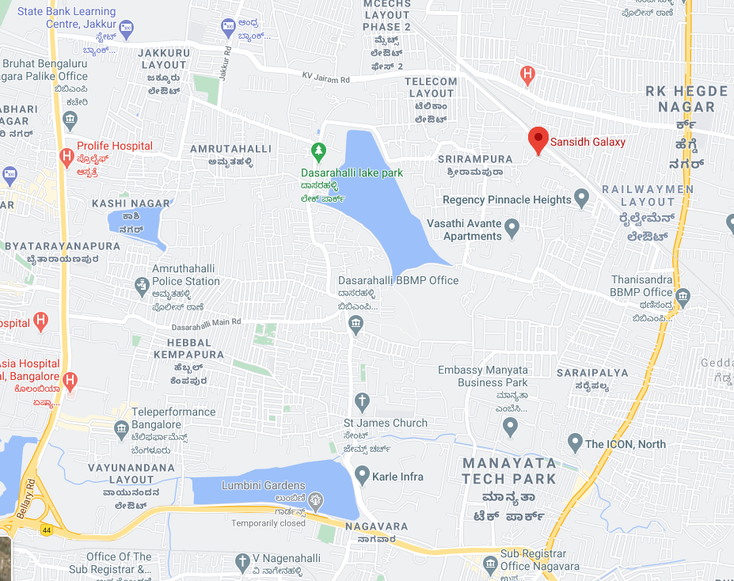

No: 2334/117, Railway Parallel Road, Rachenahalli Village, Jakkur Post, Bengaluru, Karnataka - 560077 bose.kamineni@gmail.com, srinurus@yahoo.com
- 5 minutes from Manyatha Tech Park (Walkable from Manyatha Gate.No: 5)
- 10 minutes from Hebbal Flyover
- 30 minutes to Bangalore International Airport
- 20 minutes to Bangalore Railway Station
- 10 minutes to Columbia Asia Hospital, Hebbal Bangalore
- 10 minutes to Aster CMI Hospital, Hebbal Bangalore
- 20 minutes to MS Ramaiah Hospital
- 10 minutes to Vidyashilp Academy school, National Public School
- 5 minutes to VIBGYOR school, Jakkur and Rashtrottana Vidya Kendra School.
- 5 minutes to MSR Elements Mall
- 5 minutes to Lumbini Gardens Boating and Leisure Park
